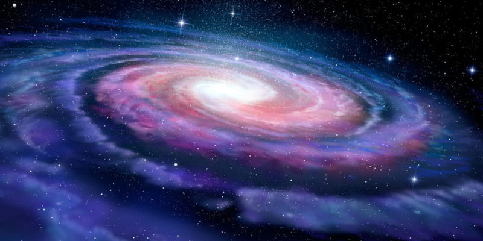

Galaxias
Las galaxias son enormes conjuntos de estrellas, polvo, gas, planetas,
cúmulos estelares, nebulosas y materia oscura, todos unidos por la gravedad.
La galaxia donde vivimos se llama Vía Láctea.

Clasificación de galaxias (según Hubble)
- Galaxias espirales
- Tienen brazos en forma de espiral que giran alrededor de un núcleo brillante.
- Ejemplo: Vía Láctea, Galaxia de Andrómeda (M31).
- Galaxias elípticas
- Forma redondeada u ovalada, sin brazos definidos.
- Contienen estrellas viejas y poco gas.
- Ejemplo: M87.
- Galaxias irregulares
- No tienen una forma definida.
- Suelen estar llenas de gas y polvo, formando nuevas estrellas.
- Ejemplo: Gran Nube de Magallanes.
- Galaxias lenticulares
- Intermedias entre espirales y elípticas.
- Tienen un disco como las espirales, pero sin brazos destacados.
Características principales
- Pueden tener diferentes formas y tamaños.
- La mayoría contiene un agujero negro supermasivo en su centro.
- Pueden interactuar entre sí: chocan, se fusionan o se deforman.
Volver al inicio